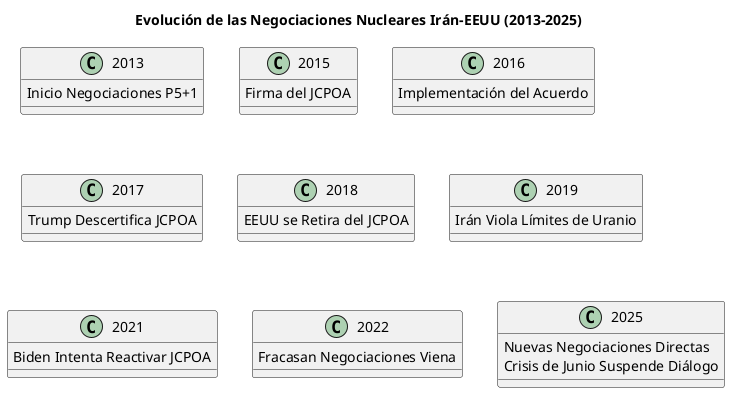
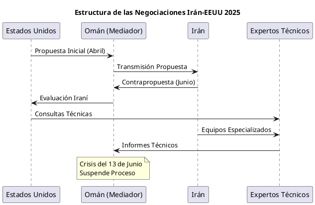
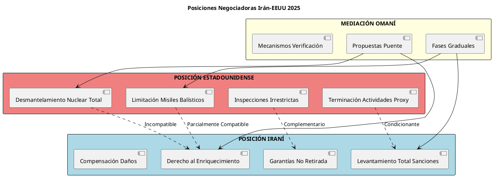
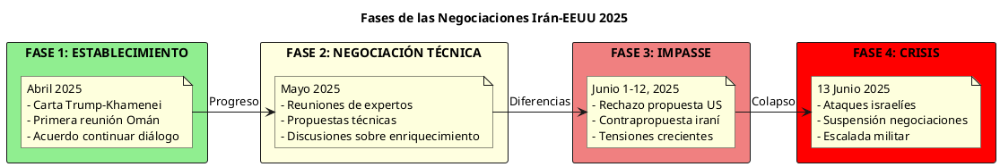
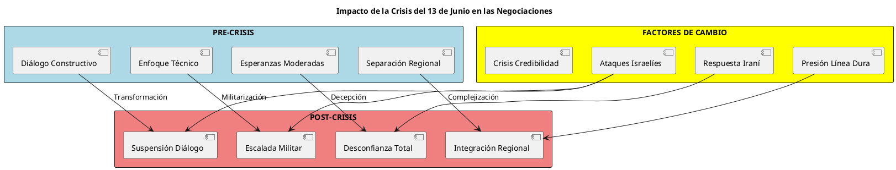

Negociaciones Nucleares Irán-EEUU 2025: Entre la Diplomacia y la Confrontación
Negociaciones Nucleares Irán-EEUU 2025: Entre la Diplomacia y la Confrontación
Las negociaciones nucleares entre Irán y Estados Unidos iniciadas en abril de 2025 representan el intento más significativo de resolución diplomática desde el colapso del JCPOA en 2018. El 12 de abril de 2025, Estados Unidos e Irán iniciaron una serie de negociaciones dirigidas a alcanzar un acuerdo de paz nuclear, tras una carta del presidente Donald Trump al líder supremo Ali Khamenei. Sin embargo, la escalada militar del 13 de junio de 2025 ha suspendido abruptamente este proceso diplomático, planteando interrogantes fundamentales sobre la viabilidad de una solución negociada al programa nuclear iraní y la estabilidad regional.
Antecedentes Históricos: Del JCPOA al Colapso Diplomático
El Acuerdo Nuclear de 2015 (JCPOA)
El Plan de Acción Integral Conjunto (JCPOA), también conocido como el acuerdo nuclear iraní, fue finalizado en Viena el 14 de julio de 2015, entre Irán y el P5+1 (los cinco miembros permanentes del Consejo de Seguridad de la ONU—China, Francia, Rusia, Reino Unido, Estados Unidos—más Alemania) junto con la Unión Europea.
La Retirada de Trump (2018)
El acuerdo ha estado en peligro desde que el presidente Donald Trump retiró a Estados Unidos de él en 2018. John Bolton presionó a Trump para retirarse del JCPOA después de ser nombrado Consejero de Seguridad Nacional en abril de 2018. En mayo de 2018, Trump terminó la participación estadounidense en el acuerdo iraní, declarando que "falló en proteger los intereses de seguridad nacional de Estados Unidos".
Respuesta Iraní y Escalada Nuclear
Un año después de la retirada del presidente Trump, Irán comenzó su ofensiva violando incrementalmente los términos del acuerdo. Teherán levantó el límite de su reserva de uranio, aumentó el enriquecimiento más allá del 3.67% permitido y reanudó y expandió la actividad en instalaciones nucleares prohibidas.

Las Negociaciones de 2025: Un Nuevo Paradigma Diplomático
Iniciativa de Trump: De la Amenaza a la Diplomacia
Irán había rechazado negociaciones directas con Washington antes de que Trump anunciara el 30 de marzo: "Si no hacen un acuerdo, habrá bombardeos, y serán bombardeos como nunca han visto antes". Esta combinación de presión máxima y apertura diplomática marcó el inicio del proceso.
Estructura y Formato de las Conversaciones
Las conversaciones han comenzado de forma bilateral, y es probable que permanezcan en este formato. Cabe señalar que las negociaciones que llevaron al acuerdo nuclear iraní de 2015 también fueron esencialmente el producto de conversaciones entre Estados Unidos e Irán que luego fueron afirmadas por el grupo P5+1.
Mediación Omaní y Sedes de Negociación
Las negociaciones han seguido un patrón geográfico específico:
- Primera Ronda: Omán (12 de abril de 2025)
- Segunda Ronda: Roma (19 de abril de 2025)
- Rondas Posteriores: Alternando entre Omán y capitales europeas

Posiciones Negociadoras: Divergencias Fundamentales
Agenda Estadounidense: Acuerdo Integral
Los asesores de Trump han hablado de un arreglo mucho más amplio que incluiría desmantelar completamente el programa nuclear de Irán, abordar el arsenal de misiles de Irán y terminar el apoyo de Irán a las fuerzas proxy en la región.
### Demandas Centrales de EEUU:
- Desmantelamiento Nuclear Completo: Eliminación total de capacidades de enriquecimiento
- Limitación de Misiles Balísticos: Restricciones al programa misilístico iraní
- Terminación de Actividades Proxy: Fin del apoyo a Hezbollah, Hamas y otros grupos
- Inspecciones Irrestrictas: Ac
(defun ggeoclaude4-menu-publicacion ()ceso total del AIEA a todas las instalaciones
Posición Iraní: Enfoque Limitado
Irán busca mantener las conversaciones enfocadas únicamente en temas nucleares, rechazando la expansión del alcance negociador. Sus demandas incluyen:
- Reconocimiento del Derecho al Enriquecimiento: Mantenimiento de capacidades civiles
- Levantamiento Integral de Sanciones: Eliminación de todas las medidas económicas
- Garantías de No Retirada: Mecanismos para prevenir futuras salidas unilaterales
- Compensación por Daños: Reparaciones por impacto económico de sanciones
El Nuevo Contexto Técnico
El programa nuclear iraní está en una posición muy diferente a la de hace una década. Ahora, Irán tiene más material nuclear, más máquinas (centrífugas de gas) para producir ese material nuclear, y tipos más avanzados de esas máquinas. También tiene años más de experiencia diseñando, fabricando equipos nucleares avanzados.

Evolución del Proceso Negociador (Abril-Junio 2025)
Primera Fase: Establecimiento del Diálogo (Abril)
Irán y Estados Unidos sostuvieron discusiones "constructivas" sobre el programa nuclear iraní. La segunda ronda de conversaciones mediadas por Omán en Roma tuvo lugar el sábado, con el Ministro de Relaciones Exteriores iraní Abbas Araghchi anunciando que comenzarían a tener reuniones de expertos.
Segunda Fase: Negociaciones Técnicas (Mayo)
El Secretario de Estado estadounidense Marco Rubio dijo el martes que Washington está trabajando para alcanzar un acuerdo que permitiría a Irán tener un programa de energía nuclear civil, pero no enriquecer uranio, admitiendo que lograr tal acuerdo "no será fácil".
Tercera Fase: Impasse y Contrapropuestas (Junio)
Irán dijo el lunes que pronto entregará una contrapropuesta para un acuerdo nuclear a Estados Unidos en respuesta a una oferta estadounidense que Teherán considera "inaceptable", mientras que el presidente estadounidense Donald Trump dijo que las conversaciones continuarían.
Crisis del 13 de Junio: Suspensión del Proceso
Los ataques israelíes del 13 de junio contra instalaciones nucleares iraníes han suspendido efectivamente el proceso negociador, marcando un punto de inflexión crítico en la diplomacia nuclear.

Análisis Geopolítico de los Actores
Estados Unidos: Entre Presión y Diplomacia
### Objetivos Estratégicos:
- Prevención Nuclear: Impedir desarrollo de arma nuclear iraní
- Estabilidad Regional: Reducir tensiones sin abandonar aliados
- Credibilidad: Mantener liderazgo en no proliferación
- Costos: Evitar confrontación militar directa
### Dilemas Políticos:
- Equilibrio entre presión máxima y apertura diplomática
- Gestión de expectativas de aliados regionales (Israel, Arabia Saudí)
- Coordinación con aliados europeos y P5+1
- Presión doméstica por resultados tangibles
Irán: Supervivencia del Régimen y Aspiraciones Regionales
### Objetivos Centrales:
- Supervivencia Régimen: Levantamiento de sanciones para alivio económico
- Prestigio Regional: Mantenimiento de capacidades nucleares civiles
- Disuasión: Preservación de programa como elemento disuasorio
- Soberanía: Rechazo a interferencia en políticas regionales
### Cálculos Estratégicos:
- Balanceo entre cooperación nuclear y actividades regionales
- Gestión de presión doméstica de línea dura
- Coordinación con aliados (Rusia, China)
- Explotación de divisiones en campo occidental
Mediadores y Actores Secundarios
### Omán: El Facilitador Tradicional
- Relaciones históricas con ambas partes
- Neutralidad en conflictos regionales
- Experiencia en mediación (acuerdo 2015)
- Capacidad logística y diplomática
### Europa: Entre Atlantismo y Autonomía
- Interés en preservar régimen de no proliferación
- Preocupación por estabilidad energética
- Tensiones con políticas estadounidenses unilaterales
- Búsqueda de papel mediador independiente
Impacto de la Escalada Militar en las Negociaciones
Consecuencias Inmediatas
La crisis del 13 de junio ha transformado fundamentalmente el contexto negociador:
- Suspensión del Diálogo: Irán ha suspendido su participación en las conversaciones programadas
- Escalada de Desconfianza: Los ataques israelíes han erosionado la confianza mutua
- Presión de Línea Dura: Fortalecimiento de sectores opuestos a negociaciones
- Complicación Regional: Involvement directo de aliados complica diplomacia bilateral
Transformación del Paradigma Negociador
### Antes del 13 de Junio:
- Enfoque en temas nucleares técnicos
- Ambiente de cautela pero constructivo
- Expectativas de progreso gradual
- Separación relativa de crisis regionales
### Después del 13 de Junio:
- Vinculación directa con seguridad regional
- Clima de confrontación abierta
- Prioridad de respuesta militar sobre diplomacia
- Integración total de dimensiones nucleares y geopolíticas

Escenarios Futuros para las Negociaciones
Escenario 1: Reanudación Condicionada (Probabilidad: 25%)
### Condiciones:
- Desescalada militar Israel-Irán
- Garantías estadounidenses sobre no repetición
- Gestos de buena voluntad (liberación prisioneros, alivio sanciones menores)
- Nueva ronda con agenda expandida incluyendo seguridad regional
### Cronología Estimada: 3-6 meses
Escenario 2: Congelamiento Prolongado (Probabilidad: 45%)
### Características:
- Suspensión indefinida de conversaciones formales
- Mantenimiento de canales diplomáticos de bajo nivel
- Escalada gradual de programa nuclear iraní
- Aumento de presión sanctions y militar
### Cronología Estimada: 6-18 meses
Escenario 3: Colapso Definitivo (Probabilidad: 25%)
### Implicaciones:
- Abandono total de vía diplomática
- Aceleración programa nuclear iraní hacia arma
- Preparación militar para confrontación
- Fragmentación régimen internacional no proliferación
### Cronología Estimada: Inmediato-12 meses
Escenario 4: Transformación Radical (Probabilidad: 5%)
### Elementos:
- Nueva arquitectura regional de seguridad
- Acuerdo multilateral expandido (Rusia, China incluidos)
- Desnuclearización a cambio de garantías seguridad
- Normalización integral relaciones
### Cronología Estimada: 2-5 años
Análisis de Probabilidades y Factores Determinantes
| Escenario | Probabilidad | Factores Favorables | Factores Desfavorables | Indicadores Clave |
|---|---|---|---|---|
| Reanudación | 25% | Presión internacional, costos escalada | Desconfianza mutua, presión doméstica | Gestos desescalada, declaraciones moderadas |
| Congelamiento | 45% | Status quo aceptable | Degradación gradual | Mantenimiento canales, escalada controlada |
| Colapso | 25% | Líneas duras dominantes | Costos confrontación | Declaraciones hostiles, preparativos militares |
| Transformación | 5% | Crisis como catalizador | Resistencia institucional | Propuestas innovadoras, apoyo multilateral |
## Factores Determinantes Críticos
### Variables Estadounidenses:
- Coherencia Política Interna: Unidad entre ejecutivo y legislativo
- Gestión de Aliados: Balance Israel-Europa-Árabes moderados
- Costos Económicos: Impacto de crisis energética
- Calendario Electoral: Consideraciones de política doméstica
### Variables Iraníes:
- Unidad Liderazgo: Coherencia entre línea dura y moderados
- Presión Económica: Sostenibilidad bajo sanciones intensificadas
- Capacidad Militar: Evaluación de capacidades defensivas
- Apoyo Popular: Legitimidad doméstica del régimen
### Variables Regionales:
- Posición Israelí: Disposición a permitir diplomacia vs. acción preventiva
- Actitud Árabe: Apoyo a solución diplomática vs. confrontación
- Papel Turco: Mediación vs. competencia regional
- Influencia Rusa/China: Apoyo a Irán vs. estabilidad global
Implicaciones Estratégicas Globales
Para el Régimen de No Proliferación
Las negociaciones Irán-EEUU representan una prueba existencial para el régimen internacional de no proliferación nuclear:
### En Caso de Éxito:
- Refuerzo de la diplomacia preventiva
- Fortalecimiento del papel del AIEA
- Precedente para crisis futuras (Corea del Norte)
- Legitimación del multilateralismo nuclear
### En Caso de Fracaso:
- Erosión de credibilidad del TNP
- Efecto demostración para aspirantes nucleares
- Fragmentación del consenso P5+1
- Militarización de crisis de proliferación
Para el Orden Regional de Oriente Medio
### Transformación de Alianzas:
- Consolidación del eje Abraham (Israel-árabes sunitas)
- Fortalecimiento del eje de resistencia (Irán-proxies)
- Marginalización de potencias medias (Egipto, Turquía)
- Polarización sectaria intensificada
### Arquitectura de Seguridad:
- Competencia por hegemonía regional
- Carrera armamentística convencional y nuclear
- Proliferación de conflictos proxy
- Fragmentación institucional (Liga Árabe, OCI)
Para el Sistema Internacional
### Impacto en Grandes Potencias:
- Estados Unidos: Credibilidad de liderazgo global
- China: Oportunidades de expansión de influencia
- Rusia: Balanceo entre socios estratégicos
- Europa: Autonomía vs. solidaridad atlántica
### Consecuencias Económicas Globales:
- Volatilidad precios energéticos
- Disrupciones cadenas de suministro
- Fragmentación mercados financieros
- Reevaluación riesgos geopolíticos
Recomendaciones Estratégicas
Para Estados Unidos
### A Corto Plazo (0-6 meses):
- Gestión de Crisis: Prevenir escalada Israel-Irán que imposibilite diplomacia
- Coordinación con Aliados: Alineamiento de posiciones con Europa y aliados regionales
- Preservación de Canales: Mantenimiento de comunicación indirecta con Irán
- Preparación de Alternativas: Desarrollo de opciones no militares de presión
### A Medio Plazo (6-18 meses):
- Recalibración de Objetivos: Realismo sobre alcance negociable
- Fortalecimiento Multilateral: Revitalización del marco P5+1
- Incentivos Positivos: Desarrollo de paquete de beneficios creíbles
- Contingencias Militares: Preparación sin provocación
Para Irán
### Consideraciones Estratégicas:
- Evaluación Costo-Beneficio: Balance entre programa nuclear y alivio económico
- Gestión de Expectativas: Comunicación realista con opinión pública
- Diversificación Diplomática: Aprovechamiento de relaciones con Rusia/China
- Moderación Regional: Evitar provocaciones que compliquen diplomacia
Para la Comunidad Internacional
### Roles de Mediación:
- Omán: Continuidad de función facilitadora tradicional
- Europa: Desarrollo de iniciativas diplomáticas independientes
- Rusia/China: Presión constructiva sobre Irán para flexibilidad
- Organismos Internacionales: Fortalecimiento de capacidades de verificación
Conclusiones: El Futuro de la Diplomacia Nuclear
Las negociaciones nucleares Irán-EEUU de 2025 representan potencialmente la última oportunidad para una resolución diplomática de la crisis nuclear iraní antes de que se consolide una lógica de proliferación y confrontación militar. La suspensión del diálogo tras la crisis del 13 de junio ilustra la fragilidad de los procesos diplomáticos en un entorno regional militarizado.
## Lecciones Clave del Proceso
### Sobre la Diplomacia Nuclear:
- Complejidad Sistémica: Los programas nucleares no pueden separarse de contextos geopolíticos regionales
- Ventanas de Oportunidad: Los momentos diplomáticos requieren aprovechamiento inmediato
- Credibilidad Mutua: La confianza es el recurso más escaso y valioso en negociaciones nucleares
- Presión de Terceros: Los aliados pueden tanto facilitar como obstaculizar procesos negociadores
### Sobre Gestión de Crisis:
- Escalada No Intencionada: Los eventos militares pueden destruir años de construcción diplomática
- Sincronización: La coordinación entre diplomacia y acción militar es crítica
- Expectativas: El manejo de expectativas domésticas e internacionales determina sostenibilidad
- Alternativas: La ausencia de opciones diplomáticas credibles lleva inevitablemente a militarización
## Perspectivas Futuras
El futuro de las negociaciones nucleares Irán-EEUU dependerá fundamentalmente de la capacidad de ambas partes para:
- Separar lo Negociable de lo No Negociable: Identificación realista de compromisos posibles
- Gestionar Presiones Domésticas: Resistencia a líneas duras en ambos países
- Coordinar con Terceros: Alineamiento con aliados y mediadores regionales
- Mantener Perspectiva Estratégica: Priorización de objetivos de largo plazo sobre ventajas tácticas
La ventana para una solución diplomática permanece abierta, pero se estrecha rápidamente. La alternativa es un Oriente Medio nuclear, con implicaciones catastrophicas para la seguridad regional y global. La próxima fase de esta crisis determinará si la diplomacia preventiva puede prevalecer sobre la lógica de la confrontación armada.
Referencias Documentales
- Wikipedia. "2025 United States–Iran negotiations." Actualizado 13 junio 2025.
- Reuters. "Iran to present counter-proposal to US, Trump says talks to resume." 9 junio 2025.
- NPR. "U.S. and Iran hold first round of nuclear talks and agree to meet again next week." 12 abril 2025.
- Al Jazeera. "Everything you need to know about Iran-US nuclear negotiations." 20 abril 2025.
- Carnegie Endowment. "Five Lessons for the Current Iran Nuclear Talks." Abril 2025.
- NPR. "Iran and the U.S. plan expert-level talks over Tehran's nuclear program." 19 abril 2025.
- Al Jazeera. "Iran sees hope for progress after fifth round of nuclear talks with US." 23 mayo 2025.
- Reuters. "Iran says it will give US talks about nuclear plans a 'genuine chance'." 11 abril 2025.
- Euronews. "Iran and US to hold talks to jump-start negotiations over Tehran's advancing nuclear program." 12 abril 2025.
- Council on Foreign Relations. "Where the U.S.-Iran Nuclear Talks Are Headed." 14 abril 2025.
- Council on Foreign Relations. "What Is the Iran Nuclear Deal?" 27 octubre 2023.
- Wikipedia. "United States withdrawal from the Joint Comprehensive Plan of Action." Actualizado 13 junio 2025.
- Trump White House Archives. "President Donald J. Trump is Ending United States Participation in an Unacceptable Iran Deal."
- Wikipedia. "Joint Comprehensive Plan of Action." Actualizado 7 junio 2025.
- CNBC. "Trump wanted an Iran nuclear deal fast. Now he may get military confrontation." 12 junio 2025.
- Britannica. "Iran nuclear deal negotiations (2025)." Actualizado 13 junio 2025.
- Responsible Statecraft. "Killing the Iran nuclear deal was one of Trump's biggest failures." 14 mayo 2024.
- Axios. "Israel's attack on Iran mires years of Trump and Obama seeking a nuclear deal." 13 junio 2025.
El Conflicto Irán-Israel: Análisis Geopolítico de una Crisis Nuclear en Escalada
—
Nota Metodológica: Este análisis integra fuentes diplomáticas oficiales, informes de inteligencia de fuentes abiertas, y evaluaciones de think tanks especializados en política de Oriente Medio y no proliferación nuclear. Las probabilidades de escenarios se basan en análisis de precedentes históricos y evaluación de factores políticos actuales.